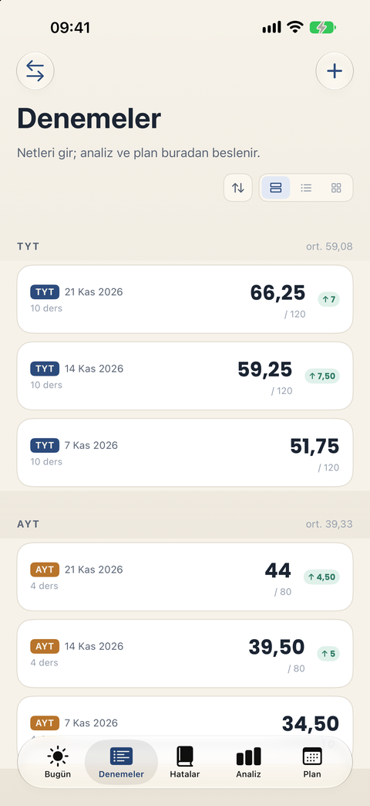
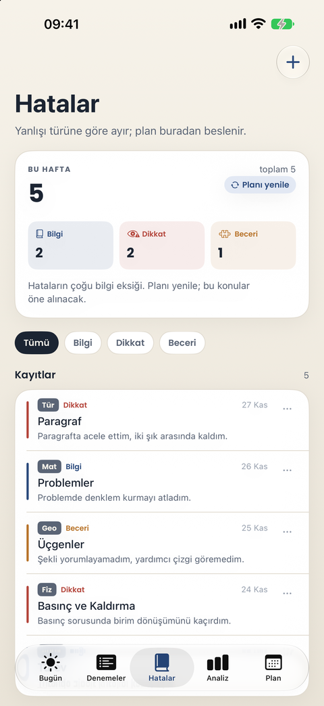

Hedef net
TYT ve AYT hedeflerini gir; hedefe kalan neti tek bakışta gör.
iOS · Eğitim
YKS hazırlığını hedef nete göre planlayan çalışma uygulaması. Deneme sonuçlarını, hata kayıtlarını ve günlük süreni tek bir plana dönüştürür. Hesap gerekmez, reklam yoktur.
Planla, Tekrar Et, Öğren.
iOS · Education
A study planner that builds YKS preparation around your target net. It turns exam results, error records and daily study time into one plan. No account, no ads.
Plan. Repeat. Learn.
Hedefe kalan neti gör; günlük görevlerini konu ağırlığı, son çalışma ve hata kayıtlarına göre sırala.
See the net gap; order daily tasks by topic weight, recent study time and error records.
TYT ve AYT hedeflerini gir; hedefe kalan neti tek bakışta gör.
Ders bazlı netleri 30 saniyede gir; trendi ve zayıf konuları gör.
Bilgi, dikkat ve beceri ayrımıyla hatalarını kaydet; plan buradan beslenir.
Kaçırdığın görevler silinmez; kalan günlere yeniden dağıtılır.
Haftanın çalışması, net gelişimi ve hata dağılımı tek sayfada.
Görevleri saat bloklarına yerleştir, Takvim’e yaz; odak ve mola modunu kullan.
Ana ekran ve kilit ekranı widget’ları; paylaşılabilir haftalık özet kartı.
Hesap yok, reklam yok. Veriler cihazında; iCloud eşitlemesi isteğe bağlı.
Enter TYT and AYT targets; see the remaining net gap at a glance.
Enter subject nets in 30 seconds; see the trend and weak topics.
Record knowledge, carelessness and skill errors; the plan is fed by them.
Missed tasks are never lost; they are redistributed across the remaining days.
The week’s study, net progress and error distribution on one page.
Place tasks into time blocks and Calendar; use focus and break modes.
Home Screen and Lock Screen widgets; a shareable weekly summary card.
No account, no ads. Data stays on your device; iCloud sync is optional.
Bugün, Denemeler, Hatalar, Analiz ve Plan; hepsi aynı hedefin etrafında.
Today, Exams, Errors, Analysis and Plan; all around the same target.

Denemeler · net trendi Exams · net trend
Hatalar · bilgi, dikkat, beceri Errors · knowledge, carelessness, skillTek seferlik ödemeyle sınırsız deneme, sınırsız hata kaydı, veli PDF raporu, saatli plan, takvim dışa aktarma, hedef tahmini ve Pro temalar açılır. Abonelik yoktur; yenileme veya tekrar ödeme yoktur.
Uygulama hesap açmadan çalışır. Veriler cihazında kalır; reklam ve üçüncü taraf izleme yoktur.
A one-time purchase unlocks unlimited exams, unlimited error records, the parent PDF report, scheduled plan, calendar export, target forecast and Pro themes. No subscription, no renewal or repeat charge.
The app works without an account. Data stays on your device; no ads or third-party tracking.